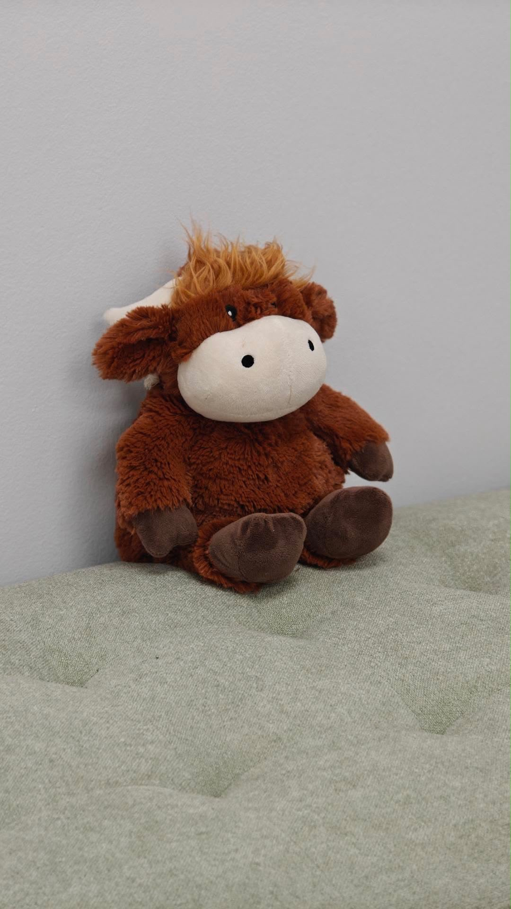

Stay connected
Share your interests in classes, play, events or community collaborations through our General Interest form.
General Interest Sign UpWE'RE HERE TO HELP
A place you can exhale. Let's help you find your place at The Nest.
Share your interests in classes, play, events or community collaborations through our General Interest form.
General Interest Sign UpFor questions about an individual provider, contact the team to be connected with the appropriate person.
Follow on Instagram
COME FIND US
GETTING HERE
There is a large parking lot where you may park. Take the elevator to the second floor, turn left down the hallway, and you'll find The Nurtured Nest at the end.
Programming begins at 9:30 AM. End times vary by day and program.